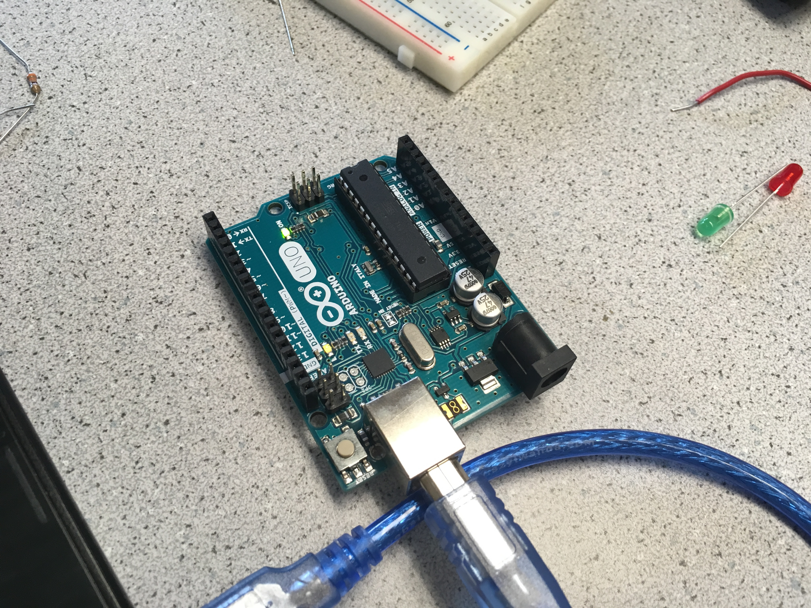
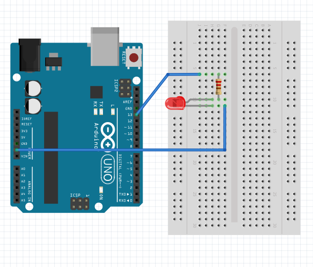
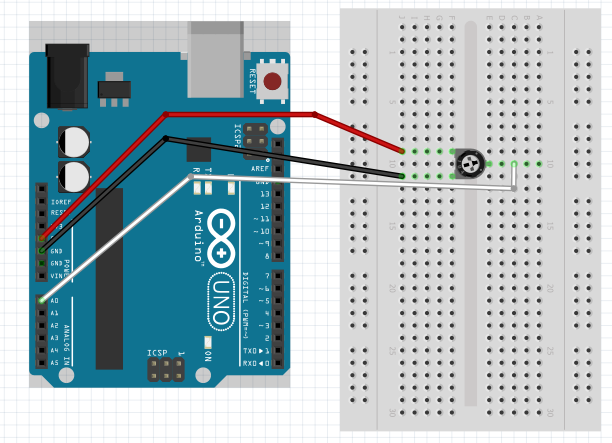
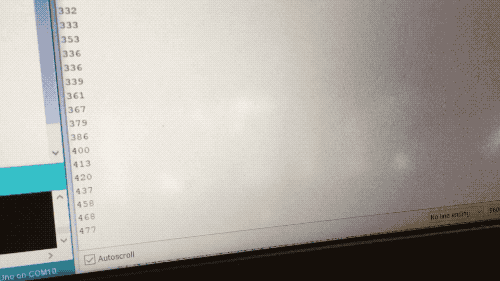
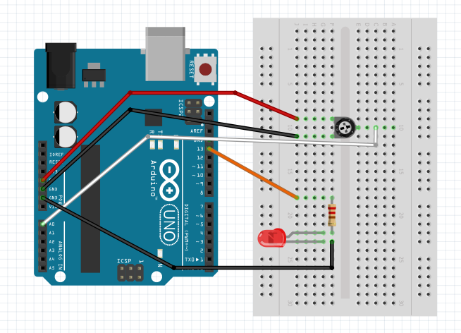
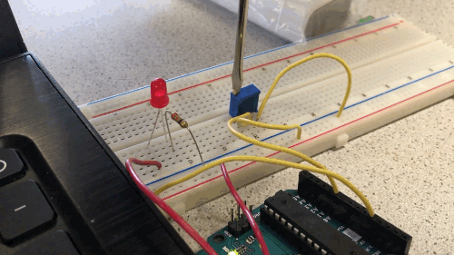
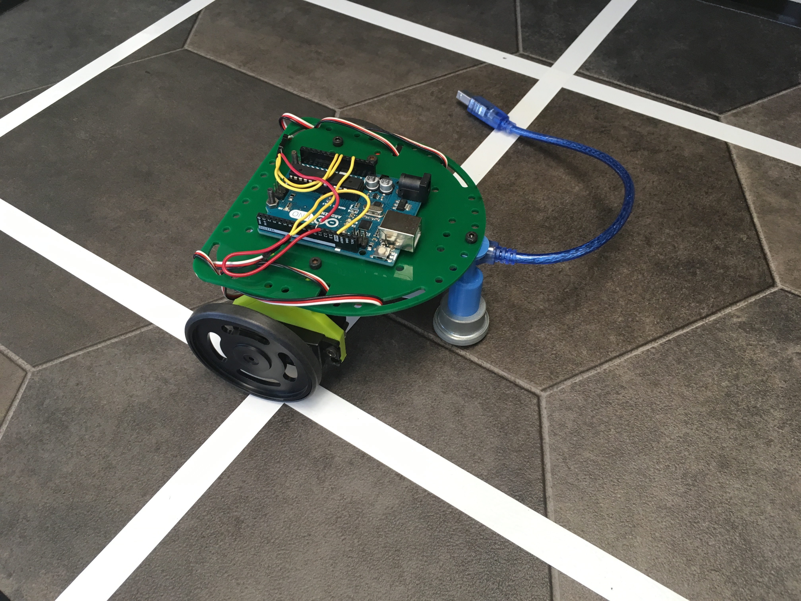
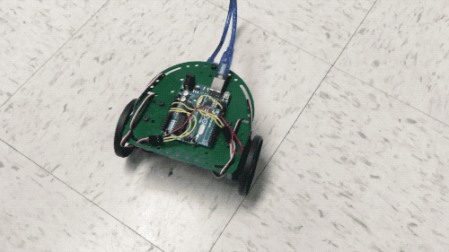

Lab 1: Microcontroller
Objectives
- Learn how to use the various functionalities of the Arduino Uno and the Arduino IDE, as well as the GitHub repository.
- Construct a simple functional Arduino program using multiple external components and the Arduino Uno.
- Assemble robot and have it perform a simple autonomous task.
Teams
- Team 1: Joseph Primmer and Vicente Caycedo
- Team 2: Francis Rayos del Sol and Eldor Bekpulatov
Internal LED
After downloading and opening the Arduino IDE, we started with the Blink example, available in File > Examples > 01. Basics > Blink. We compiled the code and made the internal LED toggle on (HIGH) and off (LOW) every second.
Internal LED shown here in the ON/HIGH state.
External LED
We connected the external LED to the Arduino by wiring it in series with a 1k ohm resistor, as seen in the image below.
Afterwards, we adjusted the Blink template to make the external LED blink instead of the internal LED. See the code snippet below for more details.
void setup(){
pinMode(13, OUTPUT);
}
void loop(){
digitalWrite(13, HIGH);
delay(500);
digitalWrite(13, LOW);
delay(500);
}

Reading Value of Potentiometer
We connected the potentiometer to our Arduino as shown in the diagram below.
Using the AnalogReadSerial example, available in File > Examples > 01. Basics > AnalogReadSerial, we initialized a serial connection in setup() and designated A0 to be an input pin.
Afterwards, using the analongRead call, we read the sensor value and printed it to the screen.
void setup(){
Serial.begin(9600);
pinMode(A0, INPUT);
}
void loop(){
Int analogIn = analogRead(A0);
Serial.println(analogIn);
}
Once we compiled and uploaded the code, the output was what we expected.
Mapping Potentiometer Value to LED
Once the potentiometer, LED, and Arduino were connected, our next goal was to control the LED brightness with the potentiometer readings.
Using the AnalogInOutSerial example, available in File > Examples > 03. Analog > AnalogInOutSerial, we read in the potentiometer value, a number in the range from 0-1023. We then scaled the reading down to the range 0-255 for the analogWrite function, which was used to control the LED brightness.
void setup() {
Serial.begin(9600);
pinMode(11, OUTPUT);
pinMode(A0, INPUT);
}
// the loop function runs over and over again forever
void loop() {
int analogIn = analogRead(A0);
int ledOutputValue = (analogIn/1023.0)*255;
analogWrite(11, ledOutputValue);
Serial.println(analogIn);
}
Below is a GIF of the LED changing brightness in response to the potentiometer readings.
Mapping Potentiometer Value to Servo

In this part of the lab, we connected the potentiometer to now control the servos on our robot. The Parallax Continuous Rotation Servos we used received values from a PWM signal in a range from 0 to 180. At 0, the servos would rotate at full speed in one direction. At 180, the servos would rotate at full speed in the opposite direction. And at 90, the servos would come to a full stop.
Similarly to the LED, we would read the value at the input pin, in this case A0, from the potentiometer, scale that value, and write it onto the servo. Our code is displayed below:
#include <Servo.h>
Servo aServo;
void setup() {
Serial.begin(9600);
aServo.attach(11);
pinMode(A0, INPUT);
}
// the loop function runs over and over again forever
void loop() {
int analogIn = analogRead(A0);
int servoOutputValue = (analogIn/1023.0)*180;
aServo.write(servoOutputValue);
Serial.println(analogIn);
}
Once our code compiled, we captured a video of the servos’ response to the change in the potentiometer values:

Robot Assembly
Assembling the robot ultimately came down to creativity with the available parts.
We began by mounting the wheels to the servo by simply pushing them into place. Using screws we were then able to attach a plastic mount to the servo that we could use to attach the entire servo and wheel to the base. We then proceeded to velcro the power bank to the bottom of the base (hidden from view) and screw in the Arduino to the top of the base for easy-to-access wiring. Finally, we began wiring and made sure to properly manage the cables to ensure a clean, sleek design that can be easy to debug in the future.
Driving Robot Autonomously
After assembly was complete, we made the robot dance autonomously in order to learn how the servos could be used to make the robot turn in different directions.
Servo rightWheel;
Servo leftWheel;
int input = A0;
//setup servos
void setup() {
rightWheel.attach(11);
leftWheel.attach(10);
pinMode(11, OUTPUT);
pinMode(10, OUTPUT);
}
//loop the dance function
void loop() {
dance();
}
//function that makes the robot dance
void dance(){
rightWheel.write(0);
leftWheel.write(0);
delay(1000);
leftWheel.write(180);
delay(1000);
leftWheel.write(0);
rightWheel.write(180);
delay(1000);
leftWheel.write(180);
rightWheel.write(180);
delay(1000);
}

Work Distribution
- Joseph Primmer: Pictures, Videos, and Code Snippets
- Francis Rayos del Sol & Vicente Caycedo: Lab Write Up
- Eldor Bekpulatov: Formatting and Publishing Lab Report Online